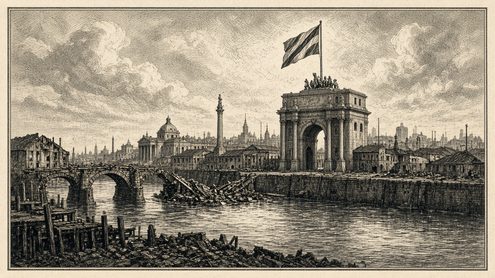
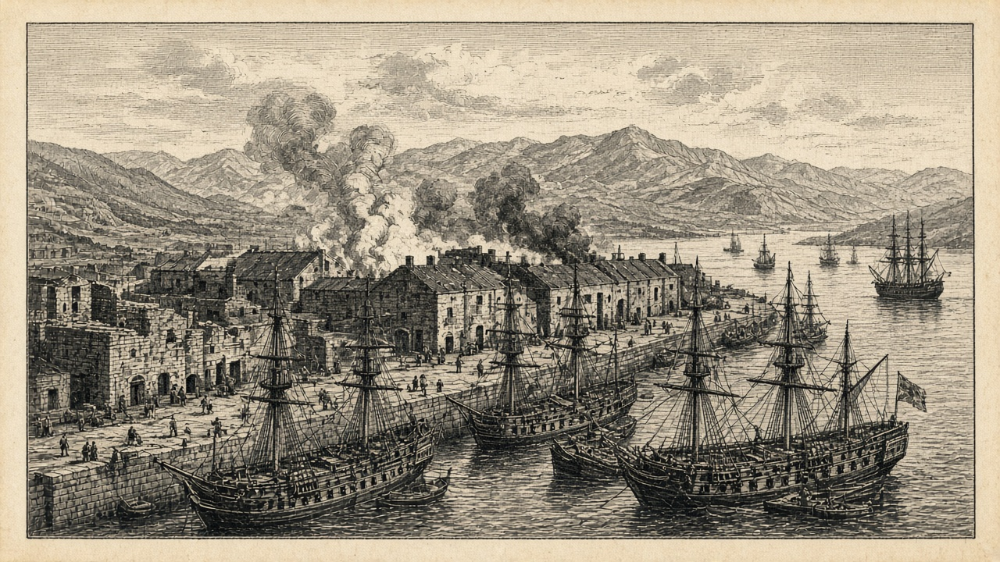
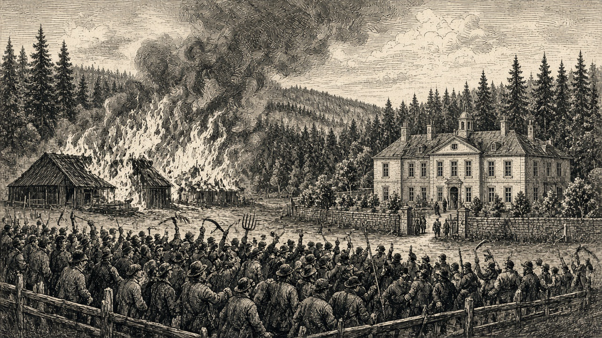

朱川共和国が滅亡 朱澄はオラニウムの占領下に
無人国化のあと現代都市を占領 連邦軍から削除 当期損害は朱川3,600・オラニウム300

【総合部】第209期、朱川共和国から人がいなくなり、無人国となった。続けて現代都市・朱澄（69,8）がオラニウム連邦の占領下になった。都市名は朱澄のまま残る。公報の当期損害は朱川三千六百人、オラニウム三百人。朱川は弾薬不足で剣と槍で戦い、海戦も弾薬・燃料不足で中止された。消滅により連邦軍の所属から削除された。詳報は2面。


オリョルッル、黄砂軍港と翠湖の港・油田を占領 蒼森は暴動9か所と農場壊滅
オリョルッル王国は黄砂同盟の軍港（26,0）、翠湖自治州の海底油田（45,34）と港（44,36）を占領した。蒼森辺境伯領では食料がなおゼロのまま九か所で暴動が起き、農場（21,11）へ住民が殺到して壊滅。食料の尽きた蒼森からオリョルッルへ一万六千人が飢餓難民として逃れ、狐っ娘の尻尾教団から金野へ七千三百人が移った。白波王国は泰平天国へ宣戦布告し、第214期開戦。既存戦線の停戦合意はなく、打診のみが並ぶ。火災二十六件・十二万二千三百人。国特集は9面の黄砂同盟。